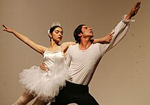

Las definiciones que constituyen a la danza dependen de factores sociales, culturales, estéticos, artísticos y morales; así como también del rango de movimiento funcional hasta las técnicas virtuosas. Estudios de danza
Cada danza, independientemente del estilo, tiene algo en común: implica tener flexibilidad y movimiento del cuerpo, así como buena condición física. Existieron muchos tipos de bailes y géneros de danza, generalmente se clasifica a estos en tres grandes grupos:
- Las danzas populares o folclóricas: Son las que se basan en la transmisión de la cultura tradicional.
- Las danzas clásicas: Son producto heredado de tiempos antiguos, principalmente en el periodo clásico de la antigüedad medieval, pero que ha sufrido cambios a través del tiempo hasta llegar a nuestros días, como el ballet.
- Las danzas modernas: Son practicadas generalmente por jóvenes y conllevan todo un tipo de identidad social a través de la forma de entender la vida e incluso de vestir: como el Funky, break dance, el rock and roll. Enfoques
